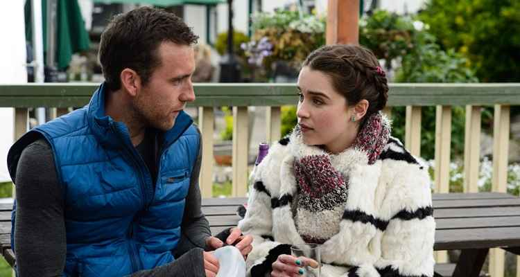

Interpretada por Emilia Clarke, Louisa Clark é a protagonista da história. Ela é uma jovem de 26 anos que vive com os pais, o avô, a irmã e o sobrinho em uma pequena cidade inglesa. Apesar das dificuldades financeiras, Louisa é conhecida por sua personalidade alegre, divertida e por seu estilo único, marcado por roupas coloridas e acessórios chamativos. Inicialmente, Louisa leva uma vida simples e tem medo de sair da zona de conforto. Porém, ao conhecer Will Traynor, ela passa por uma grande transformação. Sua convivência com ele a faz descobrir novos lugares, experimentar novas experiências e perceber que é capaz de realizar sonhos que antes pareciam impossíveis.
Interpretado por Sam Claflin, Will Traynor era um homem rico, aventureiro e apaixonado por esportes radicais e viagens. Sua vida muda completamente após sofrer um acidente de motocicleta que o deixa tetraplégico. A partir desse momento, ele passa a depender da ajuda de outras pessoas e enfrenta profundas mudanças físicas e emocionais. No início do filme, Will é fechado, sarcástico e demonstra ter perdido o interesse pelas coisas que antes amava. Entretanto, a chegada de Louisa traz de volta momentos de felicidade e faz com que ele volte a sorrir e apreciar pequenas experiências do cotidiano.
Camilla Traynor é a mãe de Will. Desde o acidente do filho, ela dedica grande parte de sua vida aos seus cuidados. Ela demonstra um amor incondicional e faz de tudo para proporcionar conforto e felicidade a Will. Sua relação com Louisa é inicialmente mais profissional, mas com o tempo as duas desenvolvem uma relação de confiança e amizade.
Nathan é o cuidador profissional de Will e um dos personagens mais queridos do filme. Sempre atencioso, paciente e bem-humorado, ele acompanha Will em todos os momentos e cria uma forte amizade com Louisa. Sua presença é fundamental para o desenvolvimento da história e para o bem-estar do protagonista.
Patrick é o namorado de Louisa no início da trama. Obcecado por exercícios físicos e competições esportivas, ele acaba se distanciando emocionalmente de Louisa. Sua presença na história ajuda a mostrar o amadurecimento da protagonista e a maneira como seus sentimentos e prioridades vão mudando ao longo do tempo.

Desde seu lançamento em 2016, Como Eu Era Antes de Você tornou-se um dos romances mais populares do cinema contemporâneo. A história emocionou milhões de espectadores em diversos países e conquistou uma legião de fãs. Além do sucesso nas bilheterias, o filme impulsionou ainda mais as vendas dos livros de Jojo Moyes e fez com que muitas pessoas se interessassem pela continuação da história em Depois de Você e Ainda Sou Eu. A obra também gerou discussões importantes sobre qualidade de vida, autonomia e escolhas pessoais, tornando-se um filme que vai além do romance e provoca reflexões sobre a forma como cada pessoa encara a vida.